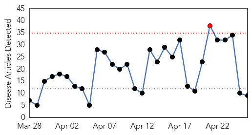
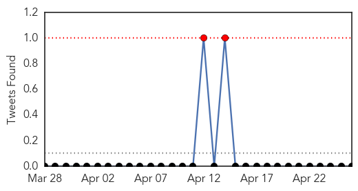
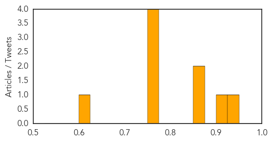

Influenza
30-Day Web Trend
1 alerts, 0 warnings

30-Day Twitter Trend
2 alerts, 0 warnings

Article Locations

Article Confidences
Top Articles:
- 0.929
- Scientists attempts to determine the longterm effect of Avian Flu H5N2 strain
- 0.919
- Three New Avian Flu Viruses Leave American Scientists Scrambling For Answers
- 0.856
- Case of Highly Pathogenic Avian Flu in Sac County
- 0.855
- Midwest Avian Flu Outbreak Calls For Bio-Security Precautions
- 0.751
- April 26, 2015 Archives
- 0.751
- April 25, 2015 Archives
- 0.751
- April 25, 2015 Archives
- 0.751
- April 25, 2015 Archives
- 0.610
- Source of outbreak is key question
Top Tweets:
-
No tweets found for Apr 26, 2015